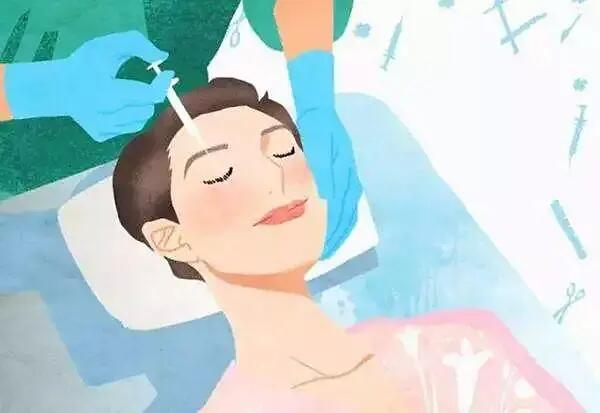
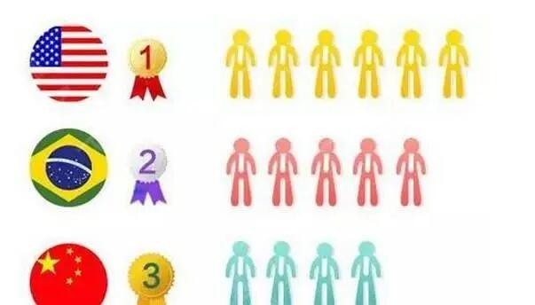
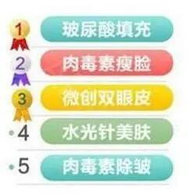
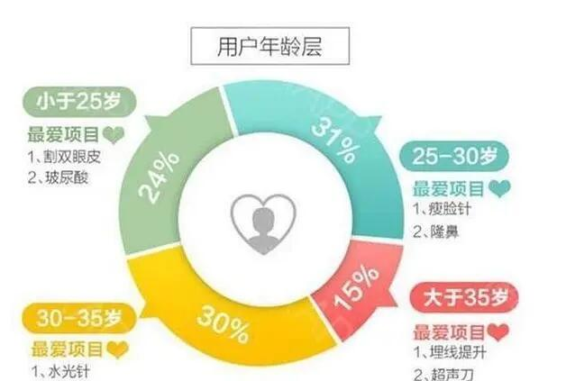

详细类容
只做轻医美
文/安理皇家记者 王倩芸
编辑/李元志
随着经济的发展和消费方式的升级，追求美丽和展示美丽的效应使得“颜值时代”的发展步入黄金时期。什么叫轻医美呢？“轻医美”是一种通过各种非手术医学手段，来补充完善传统的手术项目的全新概念。通俗的说就是不用动刀子做手术，人们常说的微整形也属于这一范畴

这是个浮躁的时代第一眼看不到你的内在外在美，一眼就能看到只有吸引人的外在美，才有更多机会展示自己的内在美，才能把别人对你的恭维变成真心的夸赞，这是要付出很多的努力的！ 现在都是讲证据、讲大数据的时代，我们上图：你以为最爱整容的是韩国人吗？其实最爱整容的是美国人！其次是巴西，中国则排行第三。

最爱捯饬哪里？中国人对于整形，
最宠爱的还是五官部分，
脸蛋儿一定要够标准、够漂亮、够精致

这是中国人大部分脸部，最宠幸的轻医美项目
谁都不想变成黄脸婆，防止衰老让岁月净失，成为现在时代人们的主要目的。
整形人群趋向年轻化，大家更喜欢轻医美，拒绝大动刀。

现在就是“颜值时代”，网红经济的兴起不得不说真的带动了整形业，大家整容不会再藏着掖着了，就大大方方的整容，而且这两年抗衰系列的整容项目比小五官的项目要受欢迎，大家要在这个时代找回真正的自己，去寻找属于你的“颜值时代”。